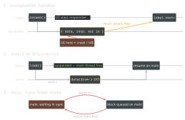
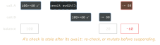

ios-swift · folio
In one line: GCD submits closures to queues and blocks
threads to wait; Swift Concurrency suspends tasks at
await (the thread is freed) and lets the compiler prove
safety with actors (serialised state), @MainActor (UI) and
Sendable (what may cross). Rule zero in both: UIKit only on
the main thread.
Download PDF Print view LaTeX source

GCD
DispatchQueue.main= serial, bound to the main thread (UI).DispatchQueue.global(qos:)= shared concurrent pool.DispatchQueue(label:)= serial unlessattributes: .concurrent.asyncreturns at once;syncblocks the caller until the block ran.main.syncfrom main (orsynconto the serial queue you are on) = deadlock.- QoS, high→low:
.userInteractive>.userInitiated>.default>.utility>.background. DispatchGroup(enter/leave/notify) = wait for N jobs;DispatchSemaphore(value: N)= limit to N;.barrieron a private concurrent queue = reader–writer.- URLSession completion handlers run on a background queue (the session’s delegate
OperationQueue) — never main. Hop before UI:DispatchQueue.main.async {…}. Forgot.resume()? Tasks start suspended.
Async/await
awaitsuspends, never blocks: the thread returns to a cooperative pool (one per core, no thread explosion); the task may resume on another thread.Task {}inherits actor, priority, task-locals.Task.detached {}inherits nothing (loses@MainActor). Both unstructured.- Structured:
async let x = f()(fixed count),withThrowingTaskGroup(dynamic count). Parent waits for children; cancel flows down, errors flow up. Two plainawaits in a row run one after the other;async let a = f(); async let b = g()starts both at once. - Cancellation is cooperative:
task.cancel()only sets a flag. CheckTask.isCancelledortry Task.checkCancellation()(throwsCancellationError). withCheckedThrowingContinuationbridges a callback API — resume exactly once (0 = hang, 2 = trap).- actor: reference type; one task at a time touches its state; outside calls need
await.nonisolatedopts a member out (methods that touch no isolated state; Sendablelets). Reentrant: at everyawaitinside it, other calls may run ⇒ re-check state afterawait. @MainActor= global actor on the main thread; on a type, method or property. Off-main:await MainActor.run {}.Sendable= safe to cross isolation: value types of Sendable parts,final classwith onlyletSendable props, actors (implicitly).@unchecked Sendable= “I lock it myself”. Swift 6 makes violations errors.
Example — the main-thread hop
// 1. Completion handler: runs on a BACKGROUND queue
URLSession.shared.dataTask(with: url) { data, _, _ in
let img = data.flatMap(UIImage.init(data:))
DispatchQueue.main.async { self.imageView.image = img } // hop!
}.resume() // tasks start suspended
// 2. async/await inside @MainActor: resumes on main, no hop
@MainActor func load() async throws {
let (data, _) = try await URLSession.shared.data(from: url)
imageView.image = UIImage(data: data) // already on main
}Which thread runs what

Actor reentrancy

Traps
- Completion handlers run on URLSession’s background queue → hop to main for UI.
async/awaitresumes on your actor —@MainActorneeds no hop. Anonisolated asyncfunc leaves the actor — unless Swift 6.2’sNonisolatedNonsendingByDefault(SE-0461) is on: then it runs on the caller’s actor. await≠ blocking.sync/semaphore/sleep()block a thread;Task.sleepsuspends.Task.detachedin a@MainActorVM runs off-main.- Cancelling does not stop a loop that never checks.
DispatchGroup: an early return withoutleave()→notifynever fires; usedefer.- Actor as a “make it fast” tool: it serialises — use a TaskGroup for parallel work.
GCD → Swift concurrency
DispatchQueue.main.async | @MainActor · await MainActor.run |
| serial queue guarding state | actor |
DispatchGroup + notify | async let · task group |
| semaphore “at most N” | task group seeded with N, add one per finish |
global().async | Task.detached · @concurrent (6.2) |
asyncAfter | try await Task.sleep(for:) |
| callback API | withCheckedThrowingContinuation |
Remember
GCD blocks threads, await suspends tasks. “Background brings the data, main paints it.” QoS: Interactive, Initiated, Default, Utility, Background — “I I D U B”.